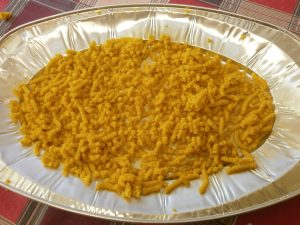

Pasta Ragia

Description
One of the traditional Christmas dishes of my city, Reggio Emilia, made with eggs, bread crumbs and A LOT of Parmigiano Reggiano. As soon as you start eating it, you never stop!
Ingredients
The following ingredients are for 4 people:
- 150 g of grated Parmigiano Reggiano
- 100 g of bread crumbs
- 2 eggs plus 1 egg yolk
- 1 teaspoon of flour
- Salt to taste
- A pinch of nutmeg
Steps
- Mix all the ingredients on a chopping board until you get a smooth dough. Carefully balance the Parmigiano Reggiano and bread crumbs to obtain the perfect consistency.
- Flour the chopping board and scrape the dough with a grater (large teeth) while shaking up the lumps to avoid them to stick to each other.
- Drop the Pasta Ragia in boiling meat stock, and cook at medium heat for 2-3 minutes.
- Serve in a plate and grate more Parmigiano Reggiano on top.
Back to Recipes Index